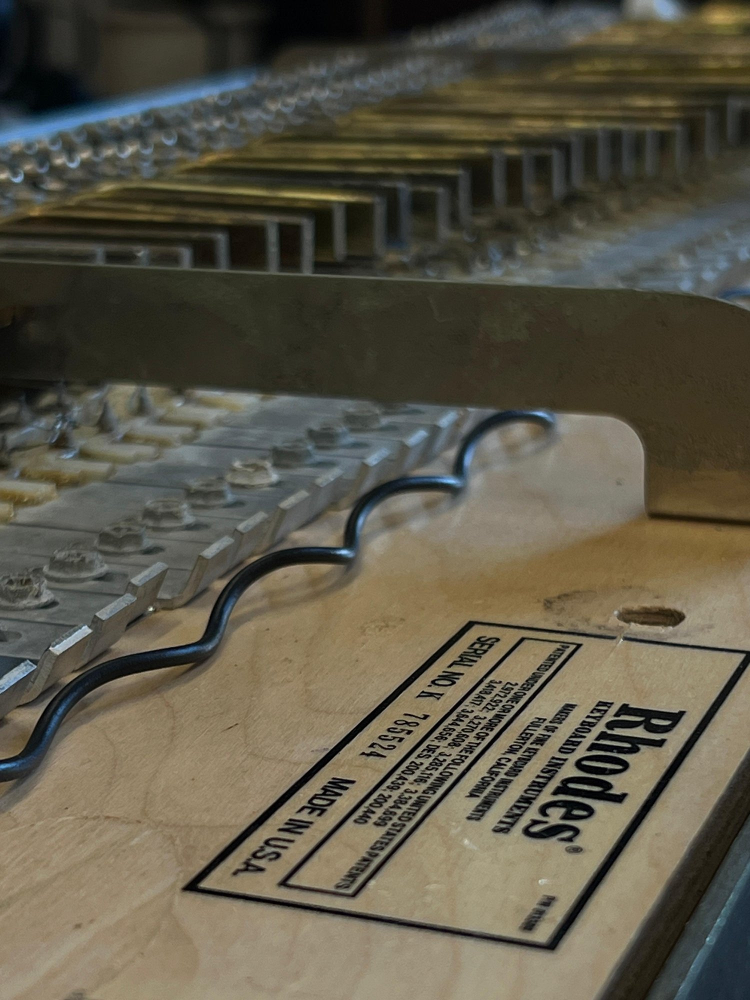
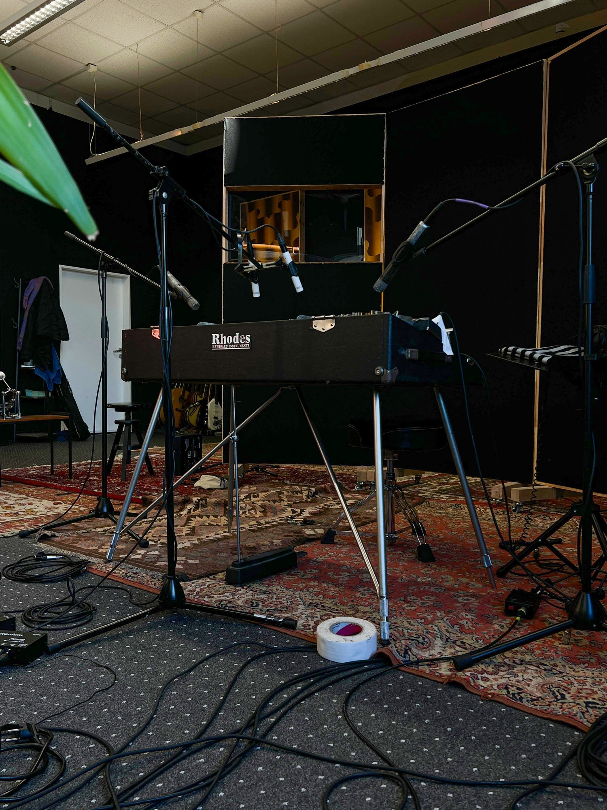
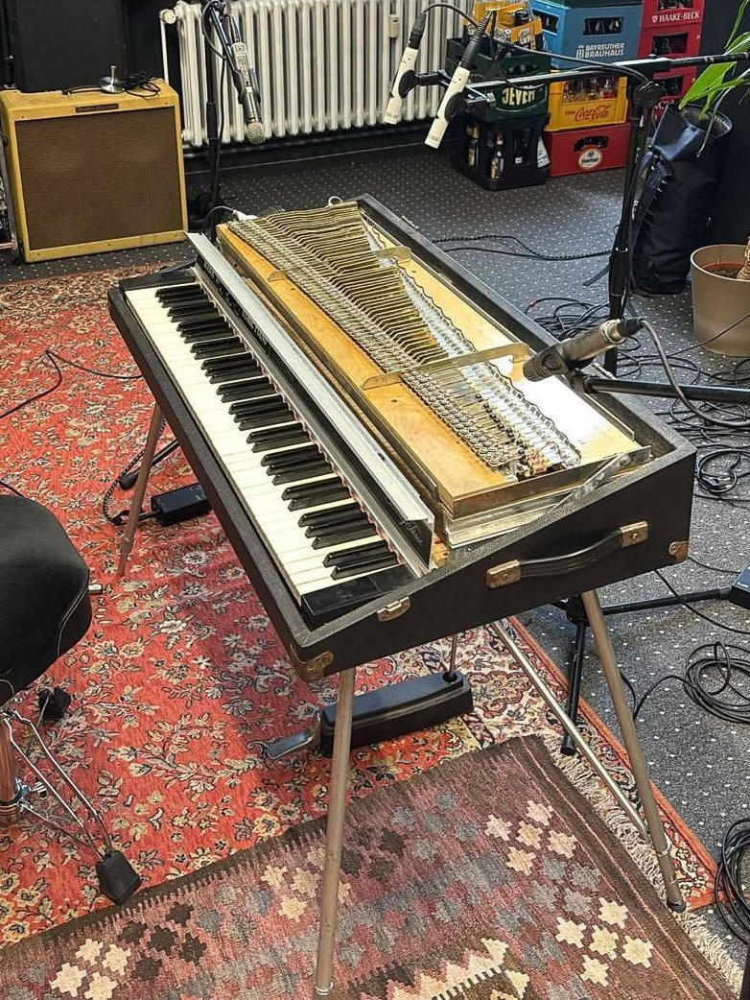
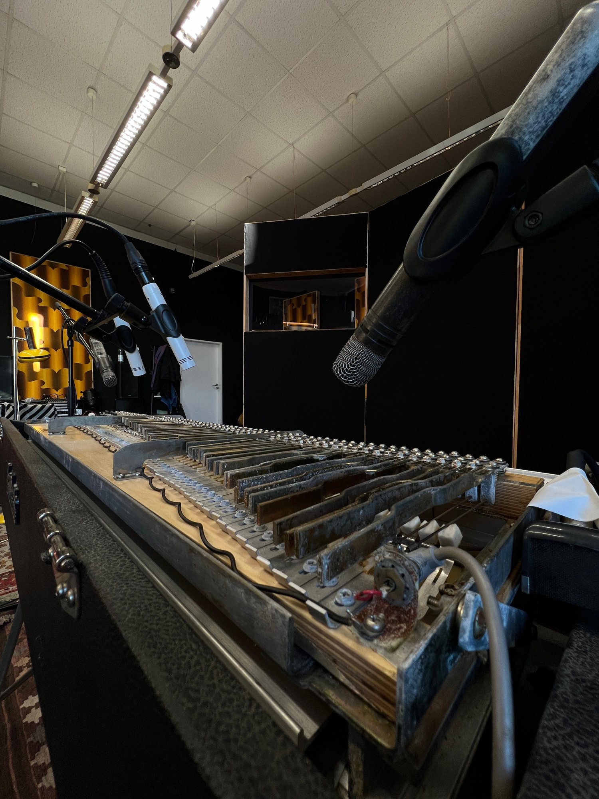

Touch the tines.
Like the Historic Organ, the Tine Piano will feature a playable preview: the original panel, real sampled sound, right here in the browser. The instrument is currently being sampled and edited.
The demo is being built.
Sampling in progress · Preview follows
Designed for soul.
Key-by-Key Sampling
Every key captured individually: no stretching, no shortcuts. Each tine keeps its own attack, its own bark, its own bell-like decay.
Multiple Velocity Layers
From soft, glassy pianissimo to the growling overdrive of a hard strike, the dynamic response of the original action is preserved across velocity layers.
Direct & Amped Signals
Captured both directly from the harp and through period-correct amplification, so you can blend studio clarity with vintage stage character.
KONTAKT & Standalone
Available for Native Instruments KONTAKT and as a standalone app, with a custom GUI in the style of the original panel, in the same series design as the Historic Organ.
An Era, Preserved
Mechanical electric pianos are ageing: tines break, tolex tears, originals get modified. This library documents one instrument, faithfully, for good.
The sound of a decade. Bottled.
The instrument behind this library is a Fender Rhodes Mark II: the electric stage piano that defined the sound of soul, jazz and pop throughout the 1970s. Instead of strings, small metal tines ring against electromagnetic pickups: an utterly simple mechanism with an unmistakable voice.
Half a century on, well-preserved instruments are becoming rare. Tines fatigue and snap, pickups drift, and many surviving units have been heavily modified away from their original tone.
No two tine pianos sound alike. This one is worth remembering.

In the studio.



What’s inside.
Coming to the series.
The Tine Piano is currently being sampled and edited. Like the Historic Organ, it will be released as a complete instrument, for KONTAKT and as a standalone app.
Get the instrument